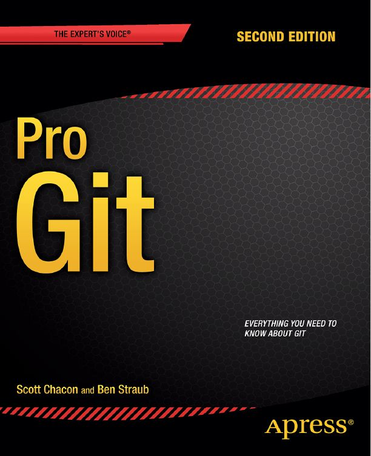
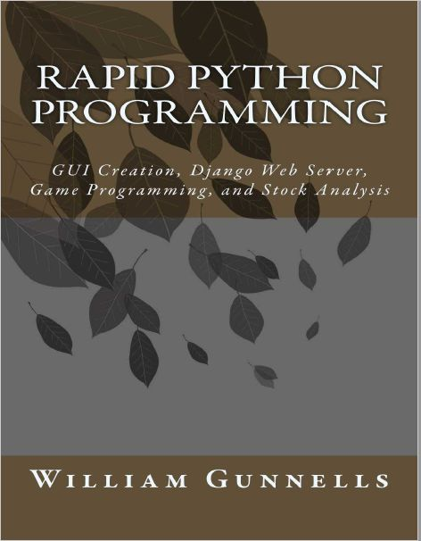
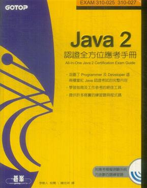

Janas Lee 的網站
Android 學習資源
化學筆記
推薦書單
關於 Janas Lee
這些都是個人覺得寫的還不錯的書，推薦給大家。
(我的意思是指適合像我這種沒什麼天份的老阿北看的書啦)
Pro Git
Scott Chacon, Ben Straub
單字

Rapid Python Programming ISBN-13: 978-1541043084
William C. Gunnells

《JAVA 2 認證全方位應考手冊》ISBN:9864211889
碁峰出版社 │ 韓忠祥譯/李樹人校閱 │
